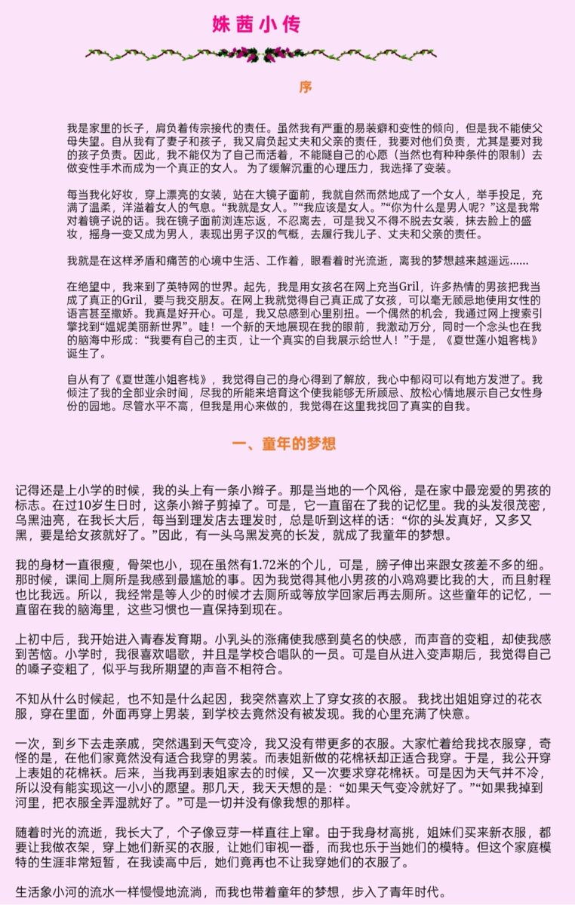
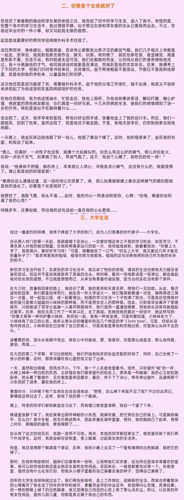
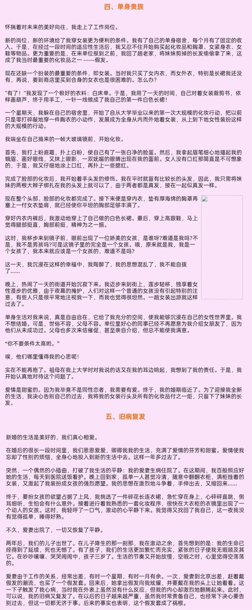
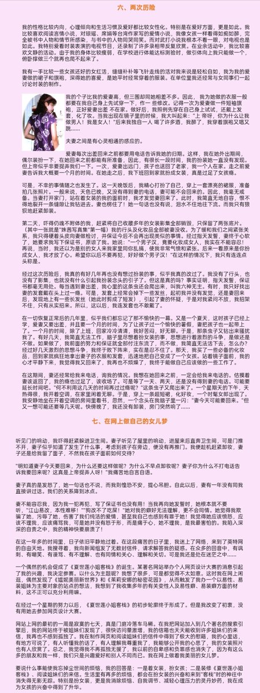

asuka 🏳️⚧️🍥🏳️🌈🏴
@H4lf_L13_F8964
RT @Yzmtsky6666: 她在20多年前确实是一位奇人，没有吃药，没有手术，却创立了堪称是国内最早的跨性别网站。
她确实有局限性，不敢突破某些责任的束缚，但至少，她勇敢去做
姝茜，不知道你现在是否安好?




Yzmt🏳️⚧️
@Yzmtsky6666
她在20多年前确实是一位奇人，没有吃药，没有手术，却创立了堪称是国内最早的跨性别网站。
她确实有局限性，不敢突破某些责任的束缚，但至少，她勇敢去做
姝茜，不知道你现在是否安好? https://t.co/HLyAlM1uyG